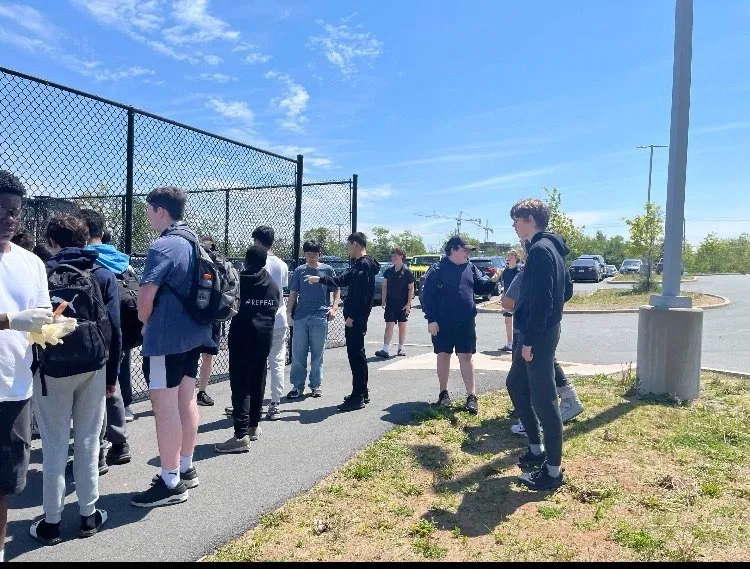
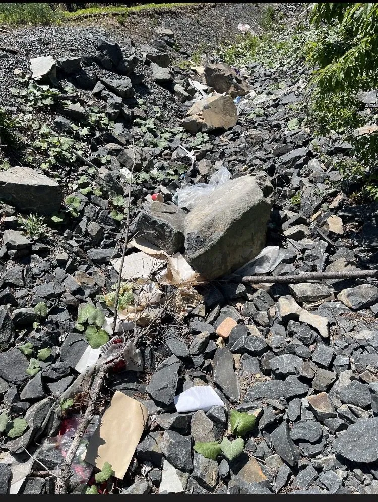
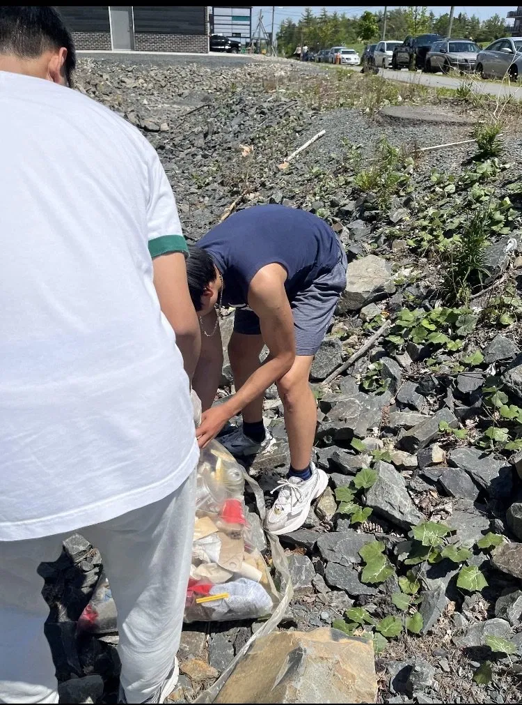
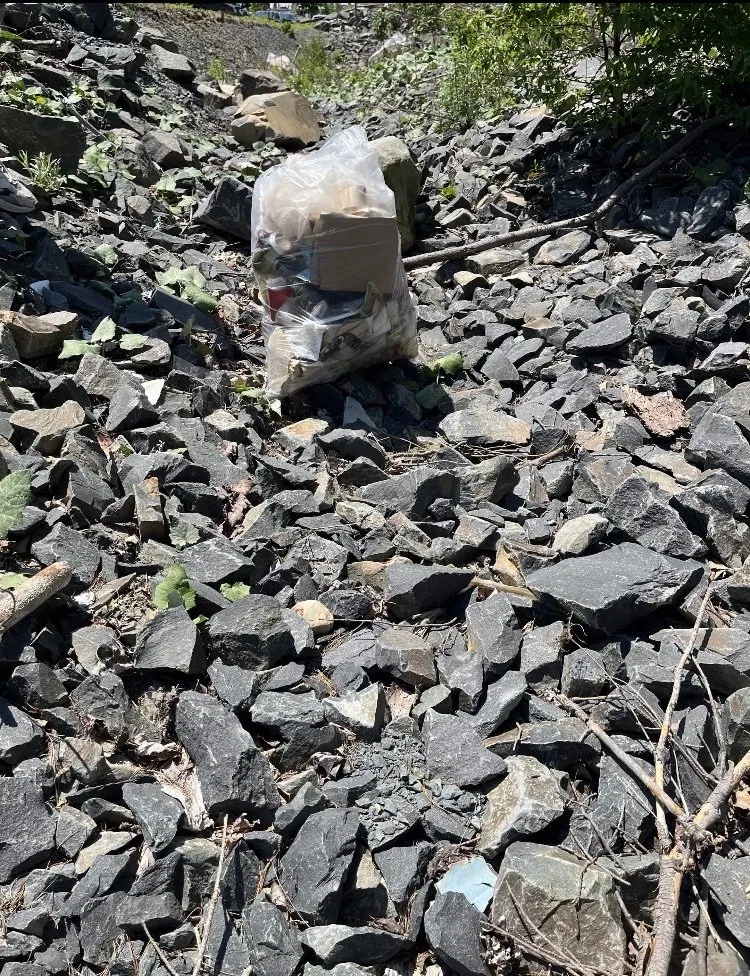
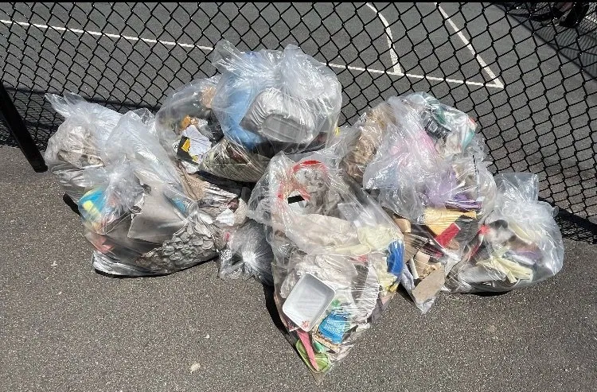

During the 2025–2026 school year, twenty-nine West Bedford School students came together and made a real, visible difference in their community.
By the Numbers
The Team

The Work

BeforeLitter scattered across the rocky area — packaging, cardboard, and waste piled up over time.

DuringStudents working through the area section by section, filling bags as they went.

AfterOne full bag collected from a single section — multiply that across 29 students and you get the full picture.
The Final Count
Every single bag represents litter that would have stayed in our community — washing into waterways, piling up in green spaces, and making West Bedford look like nobody cared. 29 students proved otherwise.

One cleanup won't solve everything — but it proves that students in West Bedford care about where they live. We hope this becomes something that continues every year, growing bigger each time.
Read Why This Matters →